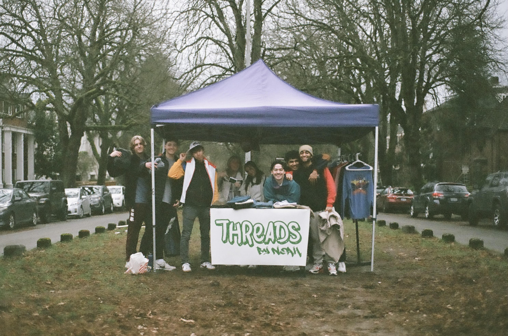

ThreadsByNoah is a vintage resale business I started in December of 2021.
In a year time I generated around $10,000 dollars in revenue selling at local vendor fairs and online.
This experience combined my passions for entrepeneurship and fashion.
I learned a lot about digital marketing, sales, and graphic design.
At the tail end of my vendor fairs I got the chance to sell my own custom shirts!

I learned that I am an entrepeneur!
In the future I hope to create a new business and make that my sole income.
I learned that hobbies and following your interests is a thousand times more rewarding than traditional work.
I hope to continue designing in every facet of my life.
I learned so many skills such as designing, marketing, photoshop, sales, data analysis, hustle, etc.
This experience taught me more about myself than any class or school could.
After school I hope to continue my passion for business by starting a direct to consumer fashion brand
I'm not sure what niche I will fill yet, but I am excited to get working.